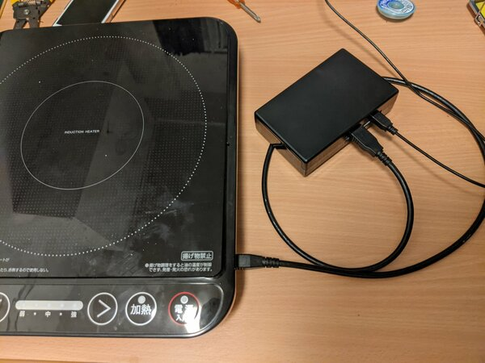
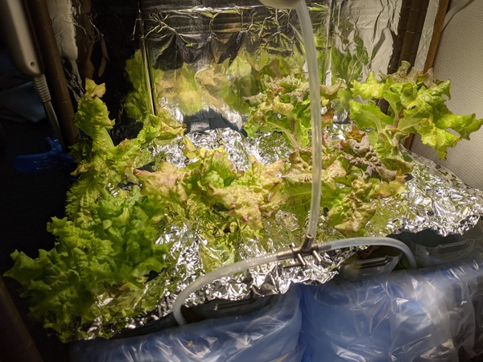
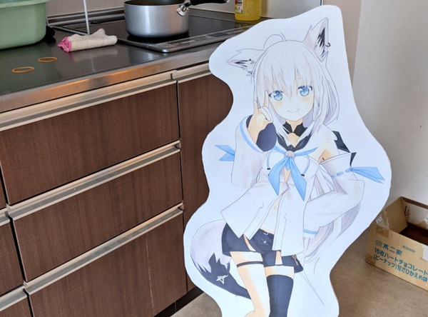
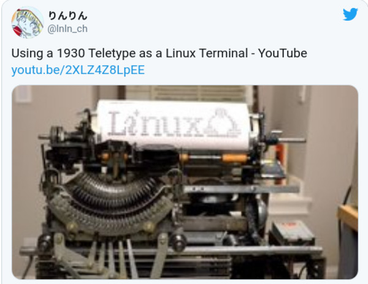
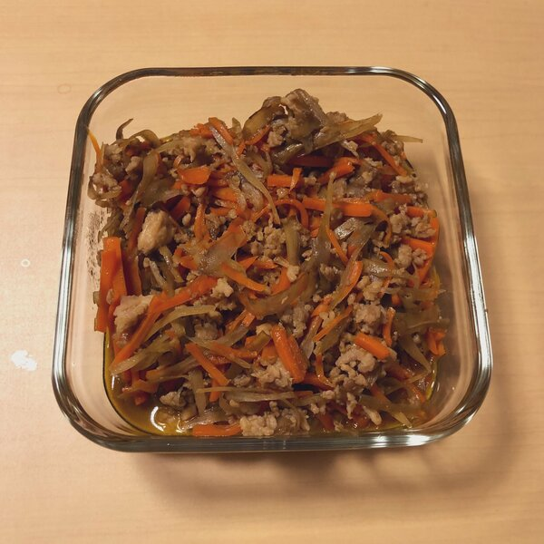
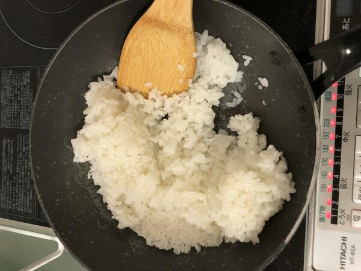

りんりん
お知らせ
About me
札幌生まれ．2020年度電気通信大学に入学，工学研究部に所属しています．
自転車に乗ることが趣味でしたが，最近は乗れていません．
Blog(?)
BlogSNS
| Twitter (@lnln_ch) | 基本ここにいます |
| Instagram (@ybasviel) | 麺とかの写真をたまに上げます |
| sa_1mn@mstdn.jp | あんまいないけどたまにいます． |
| sa_1mn@mstdn.maud.io |
なんか

自動制御IHコンロ
自動制御IHコンロ
IHコンロをArduinoで自動制御してお米を炊いてもらう．まだ書いてない

りんりんファーム01号
りんりんファーム01号
水耕栽培に挑戦しました

でかいパネル
でかいパネル
おおきな推しのパネルを作った話

YouTubeのリンクをサムネイルつきでツイートするiosのショートカット
YouTubeのリンクをサムネイルつきでツイートするiosのショートカット
その名のとおり．これウェブアプリみたいなのでできるんじゃね．

きんぴらごぼう
きんぴらごぼう
きんぴらごぼうです．ちょっと一般的なのとは違う．そのうちブログの方に移動する．

フライパン炊飯
フライパン炊飯
フライパンでお米を炊くぞ！そのうちブログの方に移動する．